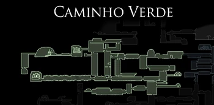
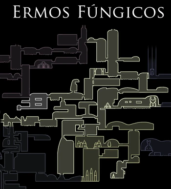
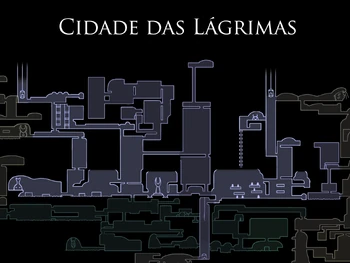

Regioes


Encruzilhada Esquecida
Mercadorias e viajantes costumavam passar por essas estradas antigas. Elas caíram a ruína há muito tempo e se tornaram infestadas com insetos agresivos e carcaças de antigos moradores.É a primeira área completa que o jogador explora, e onde ele encontrará a maioria dos NPCs que retornarão a Dirtmouth.
Caminho Verde
Túneis verdejantes protegidos por uma espécie de insetos frondosos. Piscinas de ácido ardente e o crescimento excessivo de plantas tornam a movimentação difícil.
Para entrar, o Baldur Ancião precisa ser derrotado após adquirir o Espírito Vingativo do Xamã Caracol no Monte Ancestral. O jogador então segue Hornet através da área até seu primeiro confronto.
Ermos Fúngicos
Cavernas nocivas cheias de esporos. Diferente dos insetos do resto de Hallownest, os habitantes dos Ermos são parecidos com cogumelos fisicamente. Os Ermos contém a Vila dos Louva-a-Deus ao sul, e a entrada principal da Cidade das Lágrimas ao leste.
Cidade das Lágrimas
A enorme capital de Hallownest e o coração de um outrora grande Reino, agora cheio de carcaças de insetos nobres tolos e guardas ainda dedicados a seus deveres.
Água do enorme Lago Azul acima continuamente escorre, banhando a Cidade das Lágrimas em uma chuva permanente.
A Cidade é inicialmente apenas acessível pelos Ermos Fúngicos, abrindo o portão principal com o Brasão da Cidade, no entanto, existem várias outras maneiras de entrar mais tarde com novas habilidades.